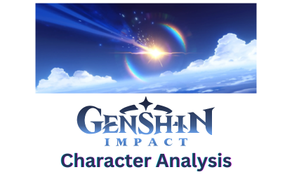

Project 1: Cyclistic Data Analysis
Note: This is my capstone project for Google Data Analysis Professional Certificate
Source of Dataset: DivvyBikes Data
Tools Used: R, Tableau
Summary: This case study aims to understand the riders behaviour and identify patterns distinguishing members from casual riders.
The secondary objective is to suggest the best recommendation to attract casual riders to sign up for memberships.

Project 2: Genshin Impact Character Analysis
Source of Dataset: Kaggle
Tools Used: SQL, Tableau
Summary: This case study aims to analyse and compare Genshin Impact characters based on their attributes, elemental types and weapon types.
Project 3: Netflix: Content Library Analysis & Identifying Existing Gaps
Source of Dataset: Kaggle
Tools Used: Excel, Tableau
Summary: This case study seeks to comprehensively examine the Netflix content library from January 2008 to September 2021, identifying content gaps and recommending strategic additions to expand audience demographics and enhance viewer satisfaction.